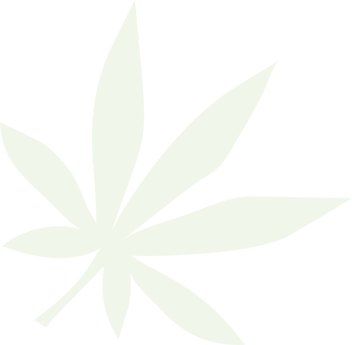

is a chemical compound from the cannabis plant. It's a naturally occurring substance that's used in products like oils and edibles to impart a feeling of relaxation and calm. By itself, it's not psychoactive.
 scroll to start
The cannabis plant is made up of two main players: CBD and THC. CBD is the non-psychoactive portion of the plant, so what that means is you won't have any effects like euphoria.
CBD is readily obtainable in most parts of the United States, though its exact legal status is in flux. All 50 states have laws legalizing CBD with varying degrees of restriction, and while the federal government still considers CBD in the same class as marijuana, it doesn’t habitually enforce against it.
While CBD is an essential component of medical marijuana, it is derived directly from the hemp plant, which is a cousin of the marijuana plant.
Both hemp and marijuana contain CBD, but there's a much higher percentage in hemp, which also has very low (less than 0.3%) levels of THC compared to marijuana.
CBD has been touted for a wide variety of health issues, but the strongest scientific evidence is for its effectiveness in treating some of the cruelest childhood epilepsy syndromes, such as Dravet syndrome and Lennox-Gastaut syndrome (LGS), which typically don’t respond to antiseizure medications.
In numerous studies, CBD was able to reduce the number of seizures, and in some cases it was able to stop them altogether.
Recently the FDA approved the first ever cannabis-derived medicine for these conditions, Epidiolex, which contains CBD.
CBD may offer an option for treating different types of chronic pain. A study from the European Journal of Pain showed, using an animal model, CBD applied on the skin could help lower pain and inflammation due to arthritis. Another study demonstrated the mechanism by which CBD inhibits inflammatory and neuropathic pain, two of the most difficult types of chronic pain to treat.
However, More study in humans is needed in this area to substantiate the claims of CBD proponents about pain control.
Side effects of CBD include nausea, fatigue and irritability. CBD can increase the level in your blood of the blood thinner coumadin, and it can raise levels of certain other medications in your blood by the exact same mechanism that grapefruit juice does.
A significant safety concern with CBD is that it is primarily marketed and sold as a supplement, not a medication. Currently, the FDA does not regulate the safety and purity of dietary supplements. So you cannot know for sure that the product you buy has active ingredients at the dose listed on the label. In addition, the product may contain other (unknown) elements. We also don’t know the most effective therapeutic dose of CBD for any particular medical condition.
Some CBD manufacturers have come under government scrutiny for wild, indefensible claims, such that CBD is a cure-all for cancer, which it is not. We need more research but CBD may be prove to be an option for managing anxiety, insomnia, and chronic pain.
Without sufficient high-quality evidence in human studies we can’t pinpoint effective doses, and because CBD is currently is mostly available as an unregulated supplement, it’s difficult to know exactly what you are getting.
If you decide to try CBD, talk with your doctor — if for no other reason than to make sure it won’t affect other medications you are taking.